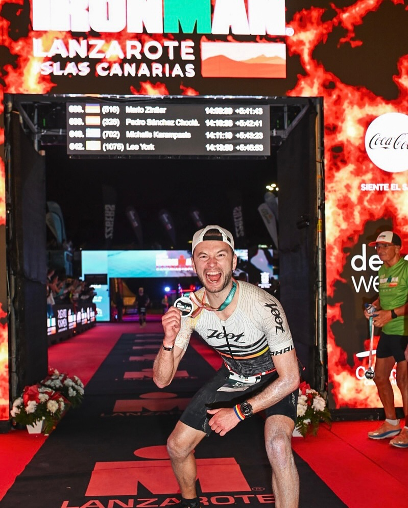

AI consulting
From scientific models to practical product decisions.
Career line
Open the milestones that shaped how I build.
Each station stays compact until you open it manually. One chapter at a time keeps the timeline calm, clear, and easy to scan.
-

tri2max

Weiler im Allgäu, Bayern, Deutschland

Oktober 2025 - today
- Android and iOS app for automated triathlon training planning
-
Canyon Explore
Weiler im Allgäu, Bayern, Deutschland
Juni 2025 - today
- Android and iOS app for planning and managing canyoning tours
-
Blue River Canyoning · Freiberuflich
Weiler im Allgäu, Bayern, Deutschland · Vor Ort
Juni 2024 - today
- Professionally trained and certified to lead canyoning tours
- Guiding tours all across Europe
- Ensuring the highest safety standards and managing risk for participants in dynamic environments
- Multi-discipline expertise in outdoor sports
- Creating memorable experiences for diverse groups of adventurers.
- Certified in first aid and trained to handle emergencies in remote settings
- Enthusiastic about sharing the beauty of canyons and their fascinating nature with people of all skill levels
- Teamführung, Risikomanagement und +3 Kenntnisse
-
TRIQ Triathlon · Vollzeit
Zürich, Schweiz · Hybrid
Feb. 2023-Sept. 2025
- Coordinating the development of a python-based software for triathlon training planning
- Directing the development and strategic integration of mathematical models to simulate and understand biological dynamics and enhancing the predictive accuracy of training methodologies
- Orchestrating the development lifecycle from concept through implementation to testing of training planning software
- Guiding data science with real-world training data
- Conducting cutting-edge scientific research on advanced concepts such as heart rate variability analysis or threshold detection, focusing on their application and implementation within the app environment
- App development, ensuring the delivery of a user-friendly and robust application
- Forschung und Entwicklung (F&E), Modellierung und +9 Kenntnisse
-
Zentrum für Sonnenenergie und Wasserstoff-Forschung Baden-Württemberg ZSW · Vollzeit
Stuttgart, Baden-Württemberg, Deutschland · Hybrid
Apr. 2019-Dez. 2022 · 3 Jahre 9 Monate
- Development of simulation software for photovoltaic modules in C#
- Multiphysics simulations from semiconductor physics to optical interferences to electrical conductivity
- Production of solar cells and modules in inline-production manufacturing plants
- Sputtering of TCO layers
- Physik, Objektorientierte Programmierung (OOP) und +3 Kenntnisse
-
University of Hawaii at Manoa
Honolulu, Hawaii, USA
Apr. 2022-Mai 2022
- Kenntnisse: Solarzellen, Dünnschichttechnologie, +1 Kenntnis
-
Universität Stuttgart · Teilzeit
Stuttgart, Baden-Württemberg, Deutschland · Vor Ort
Nov. 2014-März 2019 · 4 Jahre 5 Monate
- Conducting research in the microwave laboratory
- Leading exercise groups in experimental physics and mathematics
- Holding tutoring sessions
- Supervising physics practical courses
- Designing and grading exams in experimental physics
- Mentoring of several bachelor students
-
DLRG
Katastrophenhilfe/humanitäre Hilfe
März 2021-März 2023 · 2 Jahre 1 Monat
- Technische Abläufe im Ehrenamt organisiert und koordiniert.
- Einsatzbereitschaft von Material und Team unterstützt.
- Sicherheits- und Prozessstandards in der Ortsgruppe mitgestaltet.
-
DLRG
Katastrophenhilfe/humanitäre Hilfe
März 2013-März 2021 · 8 Jahre 1 Monat
- Jugendarbeit in der Ortsgruppe langfristig begleitet.
- Aktivitäten, Trainings und Ausflüge mitgeplant und umgesetzt.
- Verantwortung für Betreuung und Entwicklung junger Mitglieder übernommen.
-
DLRG
Kinder
März 2015-Feb. 2024 · 9 Jahre
- Schwimmtraining für Kinder regelmäßig durchgeführt.
- Technik, Sicherheit im Wasser und Ausdauer altersgerecht vermittelt.
- Lernfortschritte dokumentiert und individuell begleitet.
-
DLRG
Katastrophenhilfe/humanitäre Hilfe
März 2014-Heute · 12 Jahre
- Webseiteninhalte gepflegt und technisch betreut.
- Informationen für Mitglieder und Öffentlichkeit aktuell gehalten.
- Digitale Kommunikation der Ortsgruppe unterstützt.
-
Karlsruher Institut für Technologie (KIT)
Karlsruhe, Germany
Apr. 2019-Dez. 2022
- Dissertation: "Multiphysics Simulation of Thin-Film Photovoltaic Modules"
- Note: Summa cum laude (1,0)
-
Bergsportführerverband Salzburg
Salzburg, Austria
Mai 2024-Sept. 2024
- Rope and Knot Techniques
- Rescue Techniques
- Anchor Construction
- Navigation
- Leadership Techniques
- Tour Planning and Guidance
- Topography and Geology of Canyons
- Meteorology
- Hazard and Accident Knowledge
- Hydrology and Water Dynamics
- Whitewater Swimming
- Jumping and Sliding Techniques
- Kenntnisse: Leadership, Technische Hilfeleistung, +4 Kenntnisse
-
Deutsches Rotes Kreuz Landesschule Baden-Württemberg Standort Ulm
Ellwangen, Germany
Feb. 2019-Dez. 2019
- Aktivitäten und Verbände: Rescue Service, Emergency Room, Anesthesia
- Kenntnisse: Notfallmedizin, Notfallversorgung, +4 Kenntnisse
-
Universität Stuttgart
Stuttgart, Germany
Okt. 2016-Sept. 2018
- Master thesis: ""
- Note: 1,0
-
Simon Fraser University
Vancouver, Canada
Okt. 2017-Okt. 2017
- Kenntnisse: Mikrowellentechnik, Matlab, +2 Kenntnisse
-
Universität Stuttgart
Stuttgart, Germany
Okt. 2013-Sept. 2016
- Note: 1,6
Testimonials
Trusted in the rooms where quality, speed, and judgment matter.
A premium personal site needs social proof that feels calm and credible. These quotes are presented as discreet speech bubbles rather than loud endorsement blocks.
Mario is a person, that ... I enjoyed working with him. Or maybe not?
I worked with Mario and maybe he was cool
Tech stack
Tools, platforms, and models I work with.
The stack moves continuously across the page like a quiet signal of technical range, while keeping the overall experience minimal and controlled.
 Python
Python- JavaScript / TypeScript
- C#
- Supabase
- ChatGPT
- Google Gemini
- Claude
- Matlab
- LabView
- HTML
- Android (Java/Kotlin)
- iOS (Swift)
Sports
Discipline, risk management, and endurance also define the way I work.
A compact gallery keeps the section precise and stable while still showing the three environments that shape my mindset outside of work.
